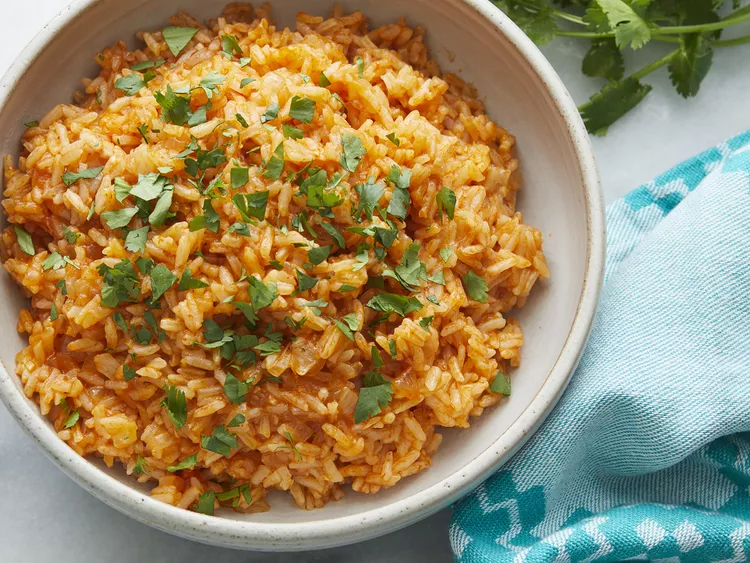

Instant pot Mexican rice

Make Spanish rice in an Instant Pot for a wonderful side dish for any Mexican meal.
Why you'll love this recipe:
- It's easy to make the Instant Pot.
- It's a delicious side dish for any Mexican meal.
- It's a great way to use up leftover rice.
Ingredients:
- 1 tablespoon olive oil
- 1 small onion, diced
- 2 cloves garlic, minced
- 1 cup long-grain white rice
- 1 cup chicken broth
- 1 cup tomato sauce
- 1 teaspoon chili powder
- 1/2 teaspoon cumin
- Salt and pepper to taste
Instructions:
- Heat olive oil in the Instant Pot on the sauté function.
- Add onion and garlic, cooking until fragrant.
- Add rice and cook for 2 minutes.
- Add chicken broth, tomato sauce, chili powder, and cumin.
- Close the lid and set the valve to sealing.
- Cook on high pressure for 3 minutes.
- Allow the pressure to release naturally for 10 minutes.
- Fluff the rice with a fork and season with salt and pepper to taste.
Home Page